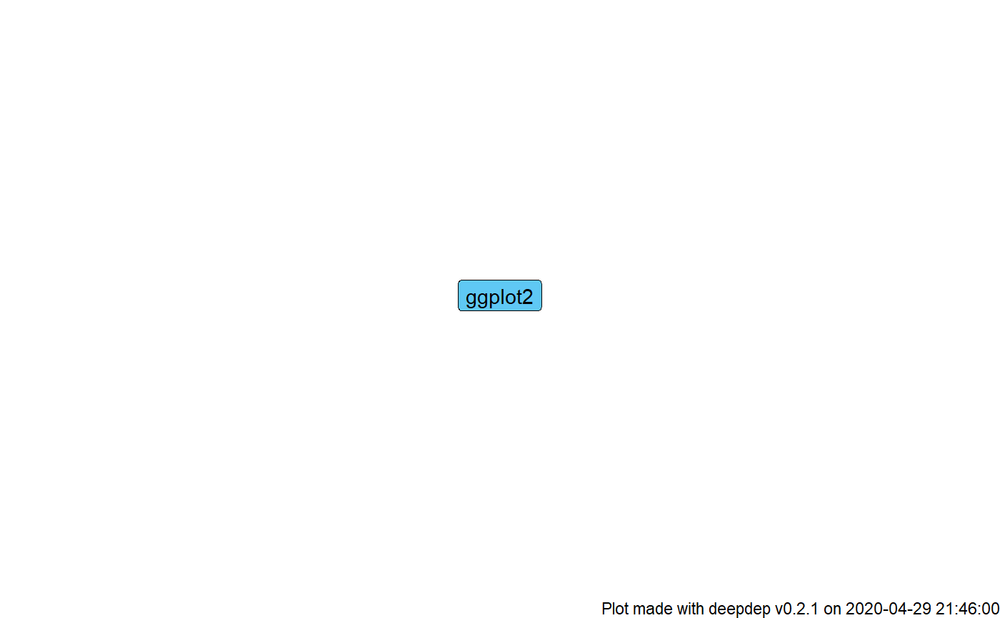

Visualize dependency data from a deepdep object using
ggplot2 and ggraph packages. Several tree-like layouts are available.
plot_dependencies( x, type = "circular", same_level = FALSE, reverse = FALSE, label_percentage = 1, show_version = FALSE, show_downloads = FALSE, ... ) # S3 method for default plot_dependencies( x, type = "circular", same_level = FALSE, reverse = FALSE, label_percentage = 1, show_version = FALSE, show_downloads = FALSE, ... ) # S3 method for character plot_dependencies( x, type = "circular", same_level = FALSE, reverse = FALSE, label_percentage = 1, show_version = FALSE, show_downloads = FALSE, ... ) # S3 method for deepdep plot_dependencies( x, type = "circular", same_level = FALSE, reverse = FALSE, label_percentage = 1, show_version = FALSE, show_downloads = FALSE, ... )
| x | A |
|---|---|
| type | A |
| same_level | A |
| reverse | A |
| label_percentage | A |
| show_version | A |
| show_downloads | A |
| ... | Other arguments passed to the |
A ggplot2, gg, ggraph, deepdep_plot class object.
# \donttest{ plot_dependencies("deepdep", label_percentage = 0.5, depth = 2, local = TRUE)#> Error in plot_dependencies.deepdep(dd, type, same_level, reverse, label_percentage, show_version, show_downloads): When you use 'label_percentage' or 'show_downloads' you have to pass deepdep object with 'grand_total' column# }